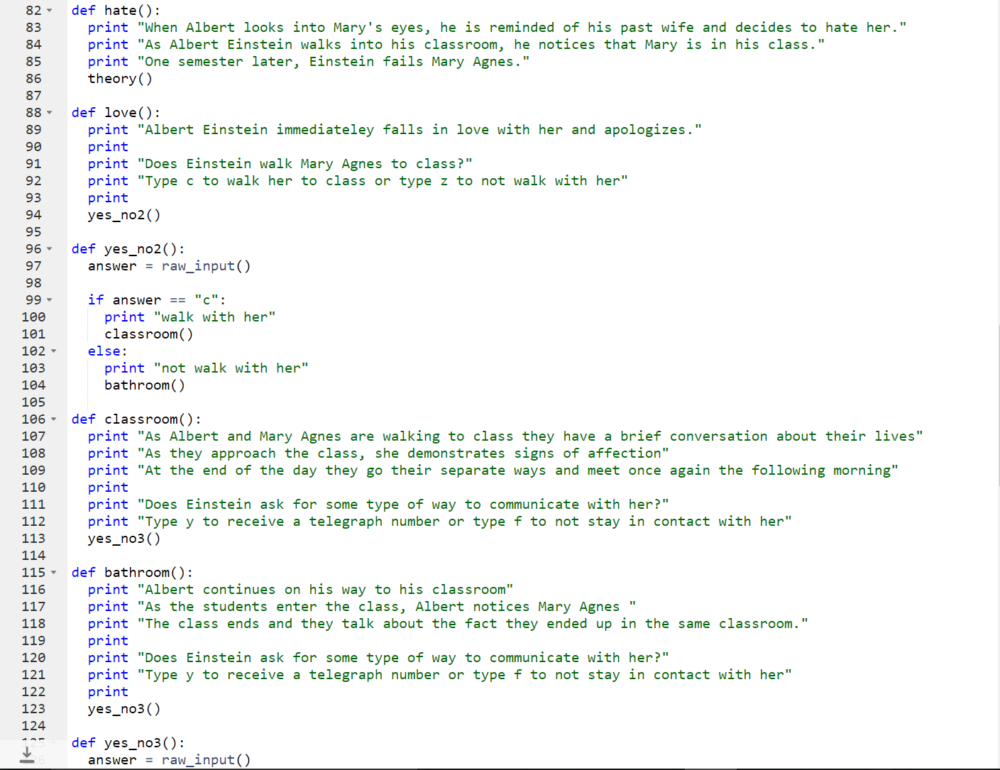
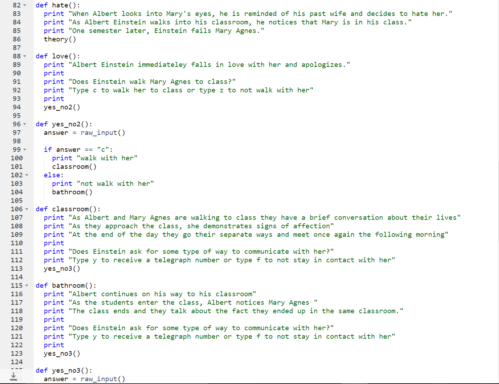
 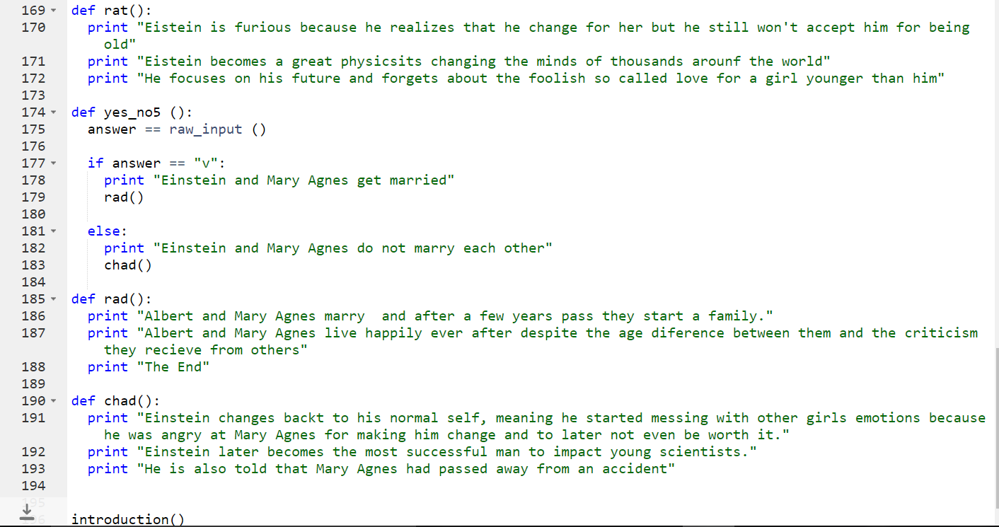
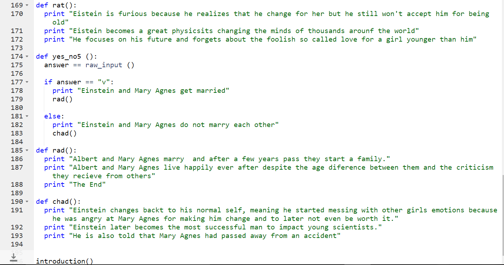

 Story: Prison Break
Story: Prison Break

The purpose of the story that we created in Scratch was for the user to successfully escape a prison with obstacles the user had to overcome in order to reach the end of the story. The path the user takes will vary in outcomes, such as the user going through the correct path and finishing the game by triumphantly escaping, or the user can diverge into the wrong path and continue following the wrong path eventually leading to failure. However, depending on the choices the user makes, it will affect the outcome of the story.

With the collaboration between my partner and I, Cecilia Mendoza, we created a story that has some features of a game system incorporated. For instance, the user will first start off in a prison and from there, they will go through many stages until they have reached the final stage which will determine if the person succeeded or failed.

Although there were some flaws in the process such as, some commands not functioning properly, starting with an idea that led nowhere, which made us change the beginning of our our code, but my partner and I managed out time properly to create the Prison Break game. Some improvements that were made on the program were adding more scenes providing comprehension for the user, in order for he/she to thoroughly understand the game. During the process I learned new vocabulary, for example, abstraction was a word I thought was related to art; however, abstraction is practically managing or reducing the complexity of the program for this concept. Another thing that I learned was how to be efficent, meaning after a while I found a way to manage my time and complete the task correctly. Looking back at how I made the program, what I think I did well was having the tasks identified before creating the story. In having the tasks identified it is beneficial for my partner and I becuase then it will be easier to create the overall program and get straight to the point. However, the things I would change are including more algorithms within the algorithm, and add more stages so that the user can have a better understanding of the events occurring in the story.
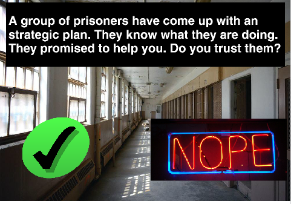The reason I would like to include more algorithm is because in including more algorithms then the complexity of the program reduces; therefore, if there are any future issues then it will be easy to identify the location of each problem. Another aspect I would change in this program is to have more interaction with the user because the game only requires them to click an image. The algorithm that was implemented in a logical form are the if-else statements. The if-else statements fall under the Bollean data type because it is a true or false statement. For example, the user has two choices from which to choose one, but if the user chooses the key then the program identifies to see which path correponds to that choice, and if it is not the deal then it does not take the user through that specific path.

In this activity my partner and I created an app that function as a type of study guide for physics. This app only focuses on Newton's Laws, which includes the first, second, and third law. Each law consists of 3-4 moderate level questions for the user. These questions can help individuals develop their conceptual skills in physics. The language used was app inventor, this consists of blocks of codes, or one can insert a button interface. The program begins by showing the title of the program demonstrating some images and a title related to the topic of the app.The user clicks or touches to start the app. The second screen is where the user chooses which law they want to study, depending on their skills within that certain area. After the questions are given then the user is given the chance to go back and choose a different law. The main data types used in this program where if-else statements and loops for the continuation of the app, if he/she wants to go back and study more.
This project was created on replit, an online coding software. The language of the program is python 2. The coding for this acitivity was not as
challenging because it was practically going by what my partner and I were doing for the rest of the code. The rebirth of Albert Eistein is something
that made me learn some new concepts about coding on python. This project was one the first full on projects we had done and it was a disaster, but
the effort is what counts. The story basically starts by giving basic information about Einstein, in this story he falls in love with a woman who
seems to be arrogant, the user has two choices each time they choose a specific path. This program is basically like a scavenger hunt escape in the end there is
no special gift but either a happy or pessimistic ending. For example, when the user starts the program a message will appear and the user will have to type a letter
depending on the user, once they choose their paths the program will take them to the next stage where will continue to choose paths for their characters.
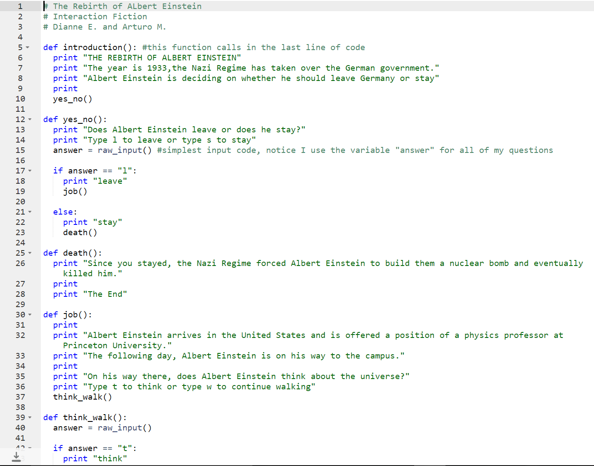
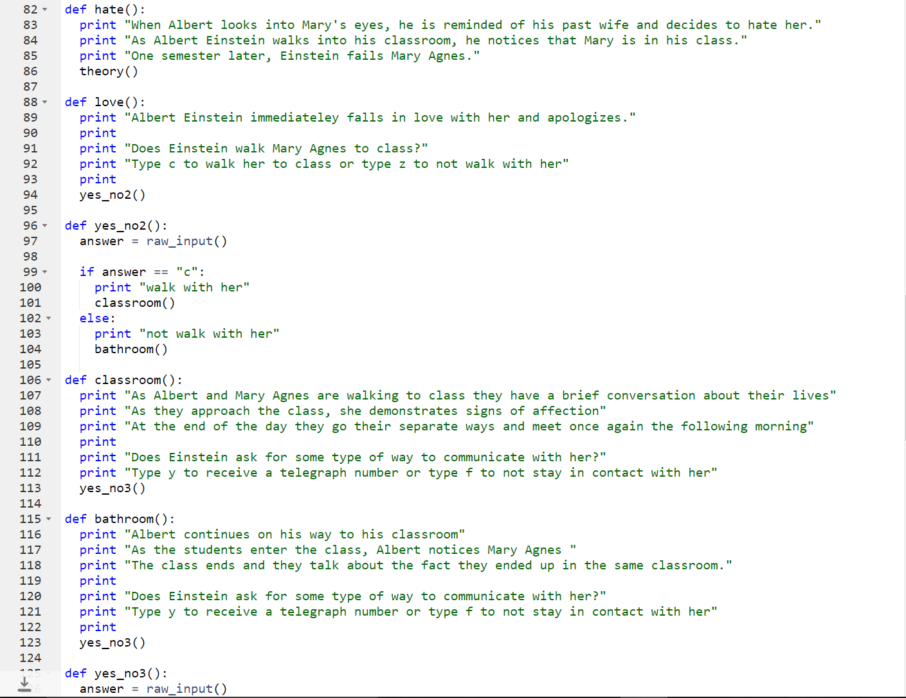
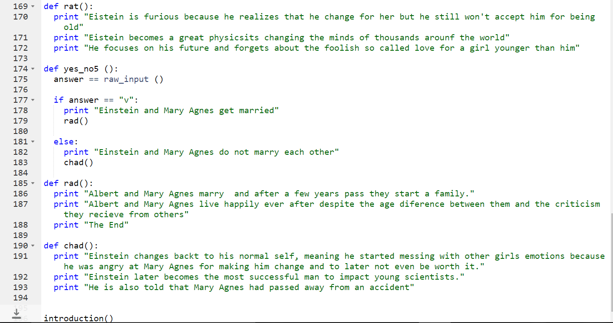
This activity was created on replit in a python 2 template, the program is a data analysis indentifier. The program is capable of finding the mean, median, mode, or range of a list of number given by the user. It consists of multiple functions for the reason that there are multiple types of data analysis. The data types used in this program include are loops, if-else statemnet, lists, and raw input is would be related to the the user input. Theprogram is provided with information or steps on how to identify a specific data analysis. For example, the code is in order from mode, median, mean, and range each of these have a special tasks. The code here was extremely challenging for me to understand because I just wanted to find a solutiona and my partner I found one but it did not seem as if it were proper, I did use an online source for help from the consent of the teacher. The code was tedious but in the end it was a successfull program.
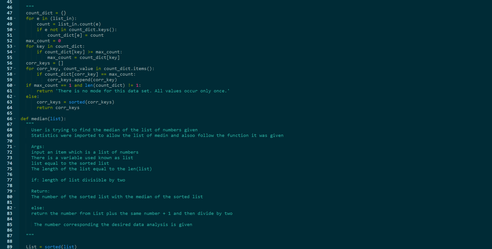
 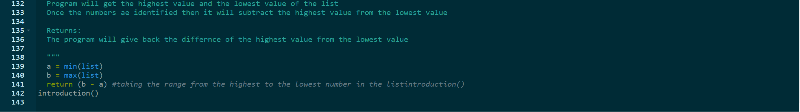
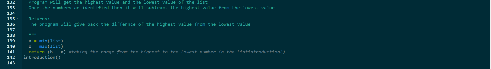
For this activity my partner and I used Enthought Canopy to modify multiple images, but we used images of puppies. The language of this program is python 2, this software will enable the user to input any image of their choice, choose the thickness of the border that will be expanded, and the color which will be given based on the RGB scale. The purpose of this program is to modify an image by adding a colored and rounded border the image chosen by the user, this gives the picture an aesthetic feeling because more detail is added to it making it more attractive. Within the code there is only one function for the two modification. The function is named add_border, this function has five raw inputs for the user. The first raw input possible by the user is where the name of the original picture will be given in the form of a string data type. The out_image will be given a name the user wants for the modified image to easily identify the file, and the new name for this image will also be given as a string data type. The border tab will inoputed as either a tuple or an integer, the information inputed will expanded the image a certain distance for the new colored border. The color section will be provided as a tuple from the RGB scale for the program to give the added border a color. As for the percent_of_side tab is given as in an integer, the number given is the radius of the soon to be rounded corners. The funtioned defined can be seen within the red circle. In the dark blue box is an if-else statement which function to be that if the information given for the border is a tuple or an integer then the program will expand the image, but if the input is not an integer or a tuple it will give an error statement which will be a string data type. The rest of the following code up until the result space is the code for the rounding of the corners, it is identifying the coordinate points for the image. The blue-greenish box is the final part for the image, this is where the program will finalize the modifications on the image and save it as the new name given by the user. In the beginning i was having trouble understanding how the code functioned because I did not want to find a modification online to try and understand the code on my own and use it to make the changes. I was excited when I had finally got the code to work because I had been constantly asking my teacher for help, so getting the work to successfully function was an overall relief. There is something I wish I could change in the program, the final image appears to have the leftovers from the rounding of the image on each corner, but since the image is not a png file than the image does not tansform the whiteness into a transparent look for the corners.


 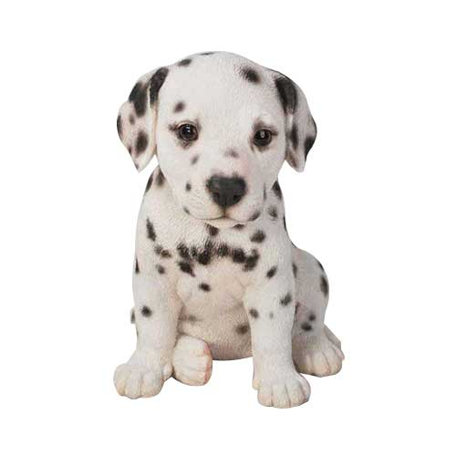
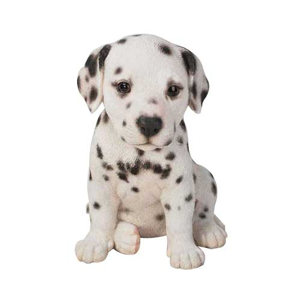